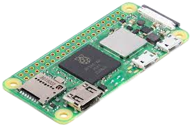
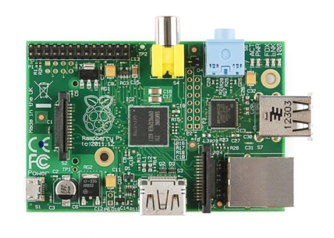
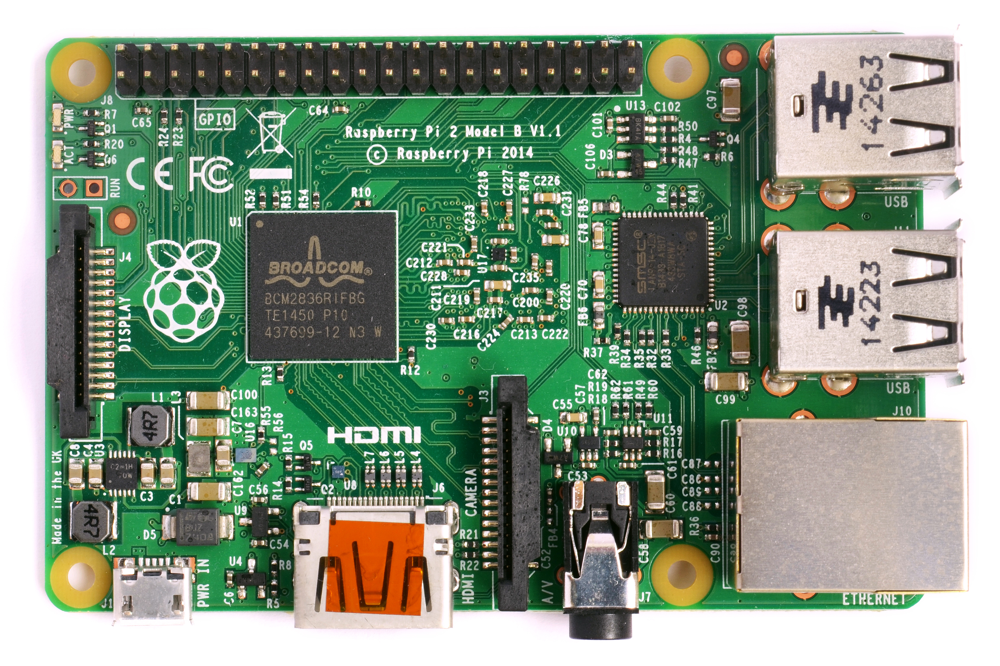
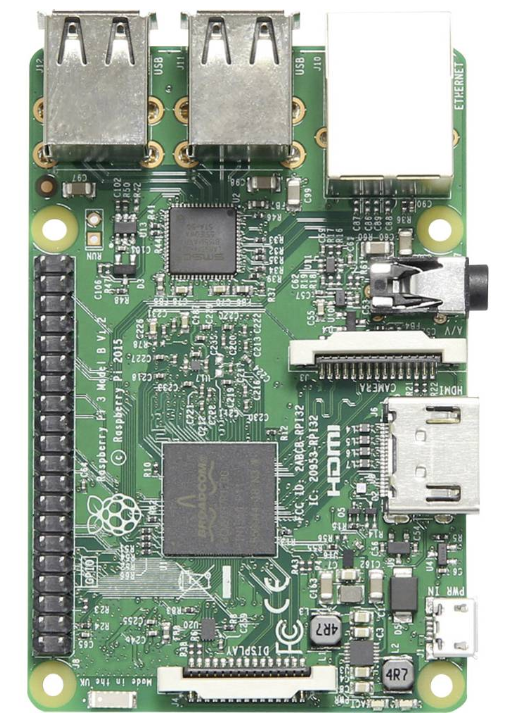
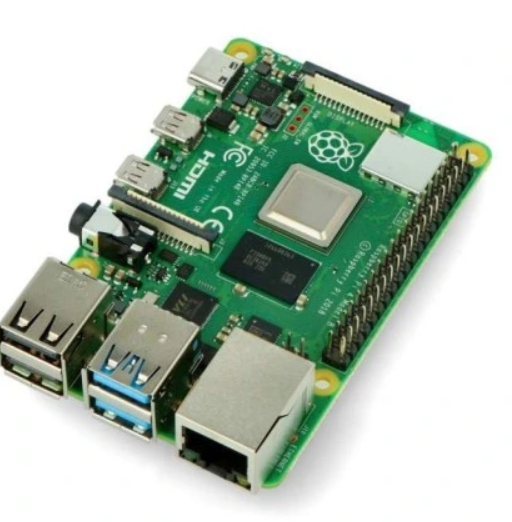

Pierwszym mini komputerem od Raspberry Pi była Raspberry Pi 1.
Lecz przedstawie wam od kolejności numerowania więc na początek 0
Raspberry pi 0 była to zmniejszona wersja mini komputera lecz nie
taka słaba 512gb RAM fajny procesor czego chcieć więcej.
Po nim wyszła jeszcze lepsza wersja Raspberry Pi 0 W z wifi a potem wersja z WH
czyli z bluetooth i wifi.

Następnym w kolejce jest Raspberry Pi 1,który jest pełnoprawnym,
biurowym komputerem.Bebechami mało się różni od zerówki,
ale ma port np mini jack i jest większa od poprzedniczki.

Po niej wyszedł jej ulepszony model B, ale nie ma się o nim co rozpisywać
przejdźmy do Raspberry Pi 2. Raspberry Pi 2 Była o tyle ciekawa,że jej bryła
pozostała taka sama aż do Raspberry Pi czwartej generacji.Odznaczała się większą
pamięcią RAM aż 1GB z bardzo wydajnym procesorem "ARM Cortex-A7".

Dla każdej Malinki wychodzą dwie wersje A i B B cechuje się większą wydajnością
i w sumie tyle żadnej filozofi w tym nie ma.
Raspberry Pi 3 miała 1gb RAMU i mało rózniła się od poprzedników dobra

przejdźmy do 4 ta to dopiero bestia. Ma wersje kolejno 2,4,8 gb pamięci RAM
na tym to nawet serwery nasa nie stoją.Na tej malince bez problemu chodzi
Minecraft, DOOM i inne gry.Ma największy potencjał z nich wszystkich.
